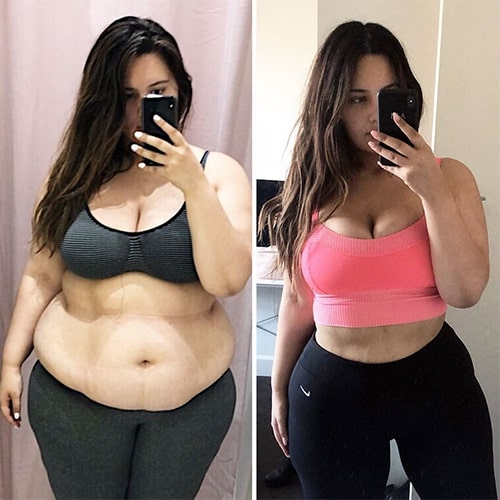
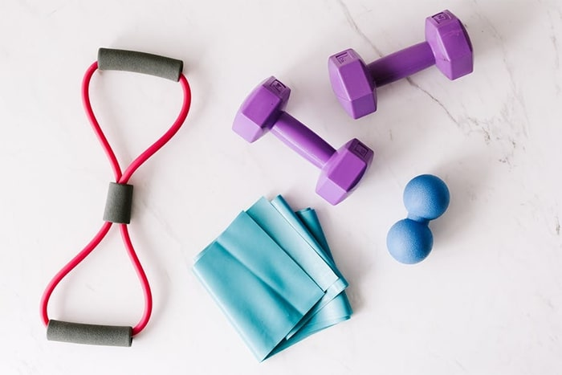
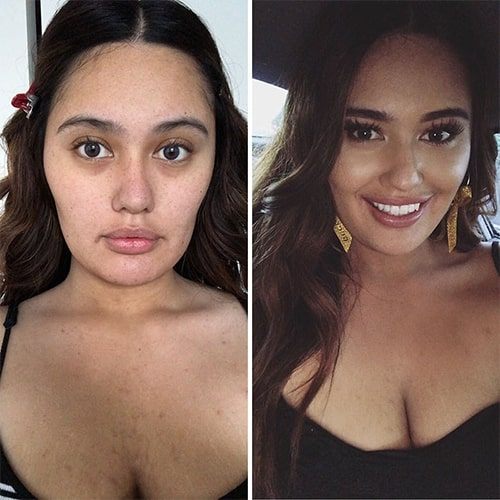

Secretul fetei subţiri a fost dezvăluit, greutatea sa reală era de 121
kg. Șantajul și remediul natural s-au dovedit a fi eficiente împotriva obezității
`
Celebrul blogger Irina Măriuţă din România ascundea adevărul de la
abonații săi de ani de zile. Mai mult de un milion de oameni nici măcar
nu și-au dat seama că fata subțire are greutate în plus. Irina ar
continua să înșele abonații, dacă nu era vecină sa. Ea a cunoscut în ea
o vedetă de la Instagram și a început să o șantajeze. Povestea s-ar fi
încheiat destul de rău, dar situația a salvat o întâlnire întâmplătoare
a bloggerului cu un dealer al companiei care distribuia producția de
fonduri naturale. Produsul său a ajutat-o să piardă în greutate cu 54 kg
în 4 luni, să-și salveze reputația și să nu rămână afară.
Așa arăta Irina în viața reală. Dacă fanii virtuali
generoși ar fi aflat despre asta, ar fi înnebunit…
Atenție: în cele din urmă veți afla informații despre un remediu care
luptă eficient cu excesul de greutate și metabolismul necorespunzător.
În vânzare liberă, produsul nu este disponibil, poate fi cumpărat numai
pe site-ul producătorului. La ultimul lot de mărfuri este valabilă o
reducere de 50%.
Nu poţi înşela milioane de oameni, adevărul devine întotdeauna evident.
Povestea bloggerului Irinei Măriuţă a confirmat încă o dată ceea ce a fost
spus. Fata s-a dus departe cu jocul, deși, ea nu a stat cu mâinile
încrucișate. Bloggerul pierdea în mod constant în greutate și a cheltuit o
mulțime de bani pe diete, proceduri și specialiști. Nu a ajutat-o nimic! Mai
precis, au dat un rezultat temporar.
A reușit să slăbească numai după o situație neplăcută cu vecina sa și o
întâlnire cu un dealer al unei companii care vindea remedii naturale pentru
slăbit. Astăzi, Irina a devenit o fată frumoasă, la fel ca în propriile
fotografii, pe care le-a procesat cu atenție în Photoshop. Minciunile și
pasiunile au râmas în trecut, unii fani încă nu cred în povestea magică a
pierderii în greutate și caută o înşelăciune.

Fotografia - confirmarea istoriei uimitoare a pierderii în
greutate. Calea transformării
Începutul unei povestiri aventuroase
Irina Măriuţă din copilărie era o fată drăguță și inteligentă, dar a simțit
întotdeauna nemulțumire și dezamăgire, atunci când se uita în oglindă.
Motivul - excesul de greutate. Anii zburau, problema rămânea. Am vrut să fiu
elegantă și subțire, ca și alte fete de la Universitate și Instagram. Nu am
avut suficientă voință și m-a chinuia teribil apetitul bun ...
Caracteristicile faciale ale Irinei cu machiaj au fost uimitoare, nu se
poate spune că fata a suferit de excesul de greutate.
Ea a început să slăbească din adolescență, când s-a săturat de batjocura
celorlalți. Stătea pe diete, flămândă și se scăpa constant. De fapt,
pierderea în greutate a fost imaginară. Voința ei s-a terminat după
câteva zile de regim alimentar strict. Aceste momente erau dezastruoase,
ea mânca pentru doi, ducând la creșterea numărului pe cântare.
La 20 de ani, greutatea sa a ajuns la 102 kg. Ea mânca în mod constant în
situații stresante și după cele mai mici eșecuri. Pierderea în greutate
s-a transformat în chin, fata se simțea ca un ratat complet.
La 21 de ani, Irina a nimerit accidental la o petrecere în care s-au distrat
o mulțime de fete frumoase care au condus o viață activă pe social media. A
vrut foarte mult să devină una dintre ele, în fiecare zi pentru a expune
fotografii frumoase și de a primi zeci de complimente de la străini. În acea
zi, ea a decis să-și conducă blogul, să creeze o imagine perfectă în
Instagram.
Seara, luând o porție mare de înghețată, ea a ales cele mai bune
fotografii și a început să le proceseze în Photoshop. Rezultatele s-au
dovedit a fi uimitoare, din imagine o privea o modelă de top. Să
obțină un astfel de rezultat a ajutat-o cunoștințele de la universitate. A
doua zi, pe rețeaua socială Instagram a apărut pagina Irinei Măriuţă și 100
de abonați noi. Blogul se dezvolta nu cu zile, ci cu ore. Băieții din
diferite țări îi scriau complimente și mesaje plăcute în direct.
Acesta fost un succes, milioane s-au străduit pentru asta!
Timp de 2 ani, blogul a câștigat peste un milion de abonați, iar greutatea a
ajuns la 121 kg. Irina trăia în lumea iluziilor, primia cadouri și a
câștigat bani buni. Cu toate acestea, au existat probleme grave de sănătate,
și anume:
microflora intestinală bolnavă, balonare severă și eliberare
necontrolată a gazelor;
dureri de cap, în special pe vreme sau atunci când exista un sentiment
de foame;
dispnee;
aciditate crescută a stomacului;
încălcarea sistemului cardiovascular;
umflarea puternică a picioarelor.
Când, într-una din zile, a avut dureri severe de inimă și s-a înrăutăţit
starea stomacului, și-a dat seama că este necesar să se efectueze un
diagnostic urgent complex al corpului.
Specialistul a fost surprins, cum la 23 de ani se pot avea probleme de
sănătate atât de grave. A spus că trebuie să înceapă urgent lupta
împotriva obezității, în caz contrar nu va fi posibilă stoparea
dezvoltării hipertensiunii, diabetului și infertilității.
Dacă continuați stilul de viață obișnuit, se va dezvolta rezistența la
insulină, ceea ce va duce în cele din urmă la diabet. Fata a avut deja
încălcări ale ciclului menstrual, a scăzut cantitatea de hormon progesteron.
Următoarea etapă este infertilitatea. După ce a vizitat specialistul, Irina
a început să adere strict la un nou program de nutriție, a mers zilnic la
sala de sport și a devenit un oaspete frecvent în sala de masaj.
Dezvăluirea neașteptată teribilă
Într-o zi, pe scara unei case cu mai multe etaje, Irina s-a întâlnit cu o
vecină. Monica era de vârsta ei cu o limbă ascuțită, un temperament luminos
și o privire pătrunzătoare. După ce s-a întâlnit cu bloggerul care nu
avea prieteni, s-a oprit și a spus: "Wow, ce frumoasă cu 150 kg! Cum pot
oamenii să creadă în asta, sunt nedumerită?!"
Irina a înghețat, a înroșit, s-a acoperit cu sudoare, inima ei a început să
iasă din piept, a apărut dificultăți de respirație. Nu știa ce să spună
vecinei. După această pauză neplăcută, fetele s-au despărțit, iar seara
Monica a sunat la uşa ei.
Dialogul a fost neplăcut, a venit cu prietenul ei, la fel de ascuțit pe
limbă și încrezut în sine. Ei i-au pus bloggerului un ultimatum: "Fie ne
rescrieți apartamentul, fie mâine întreaga rețea socială va afla
adevărul. " Pe telefonul smartphone, Monica a avut o mulțime de
fotografii cu Irina, părea că le-a colectat de-a lungul vieții.
Fata nu știa ce să facă. Rescrierea unui apartament înseamnă a rămâne afară.
În plus, ea nu credea că ei se vor opri după asta. I s-a dat o săptămână de
timp. Bloggerul se gândea să plece într-o altă țară, dar nu s-ar schimba
nimic. Ei ar fi publicat fotografiile și abonații ar fi aflat adevărul...
Întâlnirea ocazională a schimbat viața spre bine
Într-o seară, Irina stătea într-o cafenea și plângea, luând o bucată mare de
tort și un cocktail imens de cafea. În timpul pierderii sănătoase în
greutate, nu a reușit să piardă nici un kilogram. De ce s-a întâmplat
asta, nimeni nu știe. Cu suferințele sale, ea a atras atenția unui
bărbat. El a început să o întrebe de ce fata plânge.
Irina i-a povestit tot adevărul, la care omul a reacționat ambiguu. La
început, el a fost șocat, pentru că nu și-a recunoscut bloggerul preferat,
iar apoi în vedere a apărut interesul. Bărbatul s-a dovedit a fi un
distribuitor al companiei, care se ocupa cu producerea mijloacelor pentru
pierdere în greutate. Aceste produse funcţionau efectiv, ajutau la scăderea
obezității într-o perioadă destul de scurtă, fără a afecta sănătatea. Cu
toate acestea, nu erau în cerere, producătorul nu a reușit să popularizeze
produsele certificate. Companiile farmaceutice au refuzat cooperarea, a fost
foarte dezavantajoasă pentru ei. Analogii ieftini ar înceta să cumpere.
Bărbatul a îmbrățișat-o pe Irina Măriuţă de umeri și i-a oferit o afacere
interesantă. El a vrut să ofere gratuit bloggerului produsele sale în
schimbul publicității. Fata, fără să se gândească, a fost de acord.
În primul rând, a vrut să piardă în greutate, în al doilea rând, ea a văzut
o cale de ieșire dintr-o situație neplăcută. Irina a decis să dezvăluie
secretul la milioane de oameni, să-și ceară scuze pentru minciună și să
arăte lumii întregul drum către un corp subţire.
Astăzi, fata arată grozav!
Genial! Acest cuvânt a apărut în capul noilor cunoscuţi. În aceeași seară,
fata a închiriat un apartament nou și a încărcat pe rețeaua socială stories,
unde a apărut în fața publicului fără photoshop. A mers înaintea
șantajiștilor, pentru ca ei să nu obţină nimic. Publicul a fost șocat,
activitatea pe pagină a crescut. Unii nu au crezut cuvintelor ei și lăudau
bloggerul pentru curaj, alții au scris mesaje și comentarii furioase. Nu a
existat nici o cale înapoi, de data aceasta ea nu a avut dreptul de a
încălca termenii unui nou program de pierdere în greutate.

, sportul și
nutriția adecvată au devenit cei mai buni prieteni ai bloggerului
Modificări magice pe termen scurt
Dimineața, la adresa menționată, au fost livrate pachete de fonduri împotriva
obezităţii . Fata a învârtit mult timp
în mâini noul produs și a studiat compoziția. Ingredientele principale ale
a fost Sinefrin cu lanț mediu.
Ei lucrează în combinație cu o dietă , care, împreună cu
administrarea remediului, este ușor de urmărit. Produsele potrivite împreună
cu capsulele elimină rapid și permanent senzația de foame. Principiul
pierderii în greutate se bazează pe faptul că persoana elimină carbohidrații
din dieta sa, lăsând doar proteine și grăsimi. Carbohidrații - sunt primele
substanțe pe care organismul începe să le utilizeze pentru energie, apoi
sunt grăsimile și apoi de proteine.
Odată ce persoana lasă corpului numai grăsimi și carbohidrați, organismul
folosește carbohidrații rămași și apoi grăsimile, lăsând doar proteinele
- masa musculară.
Pentru a fi sinceri, Irina avea mari speranțe pentru noul program de nutriție
- programul nutrițional și voința sa decât pe produs. Dar după 5 zile,
şi-a schimbat părerea. S-au petrecut următoarele modificări:
apetitul s-a redus;
a reușit să respecte cu ușurință noul meniu;
greutatea a scăzut cu 5 kg;
au încetat să se umfle mâinile și picioarele.
a acționat! Cel mai important,
apetitul incontrolabil a dispărut, care a fost principalul motiv al
complicaţiilor.
De a urmări noul program nutrițional a fost destul de uşor, s-au petrecut
schimbări cu adevărat magice! În primele 2 săptămâni au plecat 8 kg, la
sfârșitul lunii, cântarele au arătat cu 13 kg mai puțin. Greutatea
scădea, iar bunăstarea a fost excelentă!
În timpul administrării , dispneea a
dispărut undeva, activitatea sistemului digestiv s-a stabilizat și a
încetat să mai deranjeze problemele legate de scaun. În ciuda pierderii
în greutate, fata a vrut să facă sport și să conducă un stil de viață
activ.
Viața pe pagina Instagram a Irinei a fost fierbinte. Acolo au avut loc
pasiuni grave, mulți au cerut să-și împărtășească secretul de slăbit, unii
au continuat să scrie mesaje furioase. Negativul a fost întotdeauna, așa că
fetei nu-i păsa de aceasta.
Peste 4 luni, ea a pierdut în greutate cu 54 kg, în timp ce starea de
sănătate s-a îmbunătățit. La recepție la un specialist, bloggerul a
auzit că nu mai există încălcări. Specialistul în slăbire a fost șocat,
nu a văzut niciodată astfel de rezultate și nu știa cum să le obțină.
În curând, pe blogul său, Irina a povestit lumii despre . Distribuitorul în acel moment și-a dat seama că în
acea seară a avut loc o întâlnire fatală. Vânzările de produse au crescut,
producătorul nu a putut satisface cererea, oamenii au fost de acord să
aștepte 2-3 săptămâni pentru comenzile lor.
Povestea despre Irina Măriuţă este cunoscută numai pentru cei care au
subscris-o anterior. Acum, ea a schimbat numele și a schimbat radical
aspectul, într-adevăr a devenit idealul care a pictat în imaginația sa.

Machiaj miracol, sau 15 minute în oglindă
A trecut un an, popularitatea remediului natural pentru pierderea în greutate
a scăzut puţin. Mii de oameni au scăpat de excesul de greutate și de
tulburările asociate datorită produselor disponibile. Producătorul a lansat recent un lot mare de
produs și a lansat o promoție generoasă. Pe site-ul oficial, produsul pentru
pierderea în greutate poate fi cumpărat cu o reducere de
50%. Cantitatea de mărfuri este limitată, mulți au primit deja
ambalajele mult așteptate.
ATENŢIE: Acum pentru acționează PROMOŢIA - 50% reducere. Astfel,
distribuitorul oferă posibilitatea de a profita de mijloacele de numărul
maxim de persoane. Pentru a obține produsul la un cost redus, trebuie să
completați până la (inclusiv) formularul de
comandă de pe site-ul oficial - farmaciile au refuzat să-l pună în
aplicare din cauza costului scăzut. Feriți-vă de falsuri - original poate fi achiziționat
numai pe site-ul oficial.
Ultimele comentarii
Dochia Olaru
o. {{location.name}}
,
M-a impresionat povestea acestei fete în
adâncul sufletului meu. Pe de o parte, am văzut o persoană
nefericită în ea, pe de altă parte - o persoană cu două fețe. Nu îi
condamn absolut pe șantajatori, în locul lor aș fi făcut la fel și
chiar după ce aş primi apartamentul aș fi expus-o pe Irina. Eu
însumi sufer de excesul de greutate, dar nu folosesc photoshop. Cu
plăcere voi încerca !! Am
comandat deja câteva pachete, aștept cu nerăbdare.
Monica Peter
o. Arad
,
Am obezitate de gradul 2, sufer de boală mai
mult de 2 ani, nimic nu ajută, mă prăbușesc constant. Am comandat
mai multe pachete și sper pentru un miracol!!
Ilona Băluț
o. Laşi
,
Am obezitate de gradul 2, sufer de boală mai
mult de 2 ani, nimic nu ajută, mă prăbușesc constant. Am comandat
mai multe pachete și sper pentru un miracol!!
Flavia Ursu
o. {{location.name}}
,
Luaţi-o, nu veţi regreta! Prețul cu reducere
este pur și simplu ridicol, iar acțiunea este foarte eficientă. Nu cred că este dăunător
pentru sănătate. Am trecut mai multe cursuri cu pauze, bunăstarea a
devenit mult mai bună! Greutatea a scăzut cu 9 kg, dar nu am avut
obezitate.
Martina Croitoru
o. Buzău
,
Și vreau să spun că obezitatea adaugă vârstă.
Uitaţi-vă la femeile subțiri de 40 de ani și la cele care au exces
de greutate. Cele plinuţe arată mult mai în vârstă!! este un produs excelent, nu
am întâlnit analogi!
Petru Deleanu
o. Constanţa
,
Am comandat mai multe pachete , sper foarte mult să pierd
în greutate bine. Am cam 20 de kilograme în plus. Mi-am ales dieta
, deja ader la ea, în curând voi începe să folosesc un remediu
pentru pierderea în greutate și rezultatele nu vor întârzia să
apară.
Nicolae
o. Sibiu
,
Cât vine pachetul? Și când trebuie de plătit
pentru el?
Răspunsul pentru Nicolae de la
Maria:
o. Sibiu
,
Plătiți numai la primire, durata livrării
depinde de locația dvs. Parcela mea a venit timp de trei zile.
Răspunsul pentru Nicolae de la
Catarina:
o. Arad
,
Totul este rapid, nici măcar nu veți observa.
Am folosit timp de o săptămână și sunt într-un șoc plăcut. Au plecat
4 kg...
Roxanda Moldoveanu
o. Piteşti
,
Excesul de greutate a afectat prost psihicul
fetei, o persoană normală nu se va gândi la asta....
Lina Popa
o. Satu Mare
,
Știu această poveste, am urmărit personal
procesul de scădere în greutate a Irinei! E foarte deșteaptă și
foarte curajoasă, dacă a decis să spună adevărul milioanelor, deși
nu a spus nimic despre șantaj. Am văzut programul ei de nutriție,
nimic neobișnuit, feluri de mâncare simple NA. Când a vorbit despre
, l-am comandat imediat. Fără
diete am pierdut în greutate timp de o lună cu 5 kg!!!
Frăsâna
o. Buzău
,
Și eu am folosit !) Sunt foarte mulțumită, greutatea nu se
întoarce și mă simt minunat.
Ghiţă
o. Braşov
,
Nu înțeleg... De ce este atât de eficient, toate componentele sunt
naturale și nu este nimic neobișnuit…
Gabriela Roşu
o. Arad
,
Cu siguranță voi încerca!
Diana Lupu
o. Băcău
,
Nu-mi pot imagina cum această fată își
strânge pielea după o astfel de pierdere rapidă în greutate. Pe noua
fotografie arată bine sau este din nou Photoshop???
Stela Țurcănașu
o. Timişoara
,
Tocmai am făcut o comandă pentru 3 pachete,
mai bine iau mai mult decât să rămân cu excesul de greutate. Voi lua
până voi pierde în greutate!!!
Paulina Zimbreanu
o. Galaţi
,
Am luat pentru soțul meu. El a avut un apetit puternic, am avut de
gătit în mod constant. Nu e normal!! Specialiștii i-au sugerat să-i
micşoreze stomacul. Au încercat acest instrument și știţi că a
ajutat! Astăzi nu mai are lăcomie pentru mâncare, soțul mănâncă din
nou o porție standard.
Liliana Dergaci
o. Botoşani
,
Acest produs suprimă foarte bine pofta de
mâncare. Sunt persoană de genul ăsta care nu poate rezista înaintea
mâncării delicioase, trebuie să iau suplimentul. În timpul
aplicării, mi-a fost suficient o mică bucată de tort, acum nu există
nici o dorință de a lua o bucată suplimentară.
Olga Matei
o. Reşiţa
,
După aplicarea capsulelor și a efortului
fizic, am restabilit fundalul hormonal. Acum arăt cu 10 ani mai
tânără, mă simt ca o fată tânără atractivă la 45 de ani. Vă mulțumim
pentru articole și mulțumesc Irinei, ea are o experiență
neobișnuită.
Gheorghe
o. Foşcani
,
Am făcut comanda urgent, m-am săturat să pierd
timpul fără rezultat în sala de sport. Nu mai am puteri! Lasă să mă
ajute!!!
Mulțumesc! Feedback-ul
dvs. este trimis la moderare.
Consumatorul are dreptul sa notifice in scris comerciantului ca renunta la cumparare, fara penalitati si fara
invocarea unui motiv, in termen de 10 zile lucratoare de la primirea produsului sau, in cazul prestarilor de
servicii, de la incheierea contractului.


o. {{location.name}}
,o. Arad
,o. Laşi
,o. {{location.name}}
,o. Buzău
,o. Constanţa
,o. Sibiu
,o. Sibiu
,o. Arad
,o. Piteşti
,o. Satu Mare
,o. Buzău
,o. Braşov
,o. Arad
,o. Băcău
,o. Timişoara
,o. Galaţi
,o. Botoşani
,o. Reşiţa
,o. Foşcani
,